Extras: Difference Equations and System Representations
Contents
Difference equations
Whereas continuous-time systems are described by differential equations, discrete-time systems are described by difference equations. From the digital control schematic, we can see that a difference equation shows the relationship between an input signal e(k) and an output signal u(k) at discrete intervals of time where k represents the index of the sample. For example, if the sample time is a constant T, then e(k) represents the value of e at the time kT. Suppose we are interested in the kth output signal u(k). A computer can calculate the output signal u(k) based on the past and current input signals, e(0) to e(k), and past output signals, u(0) to u(k-1). Such a calculation can be expressed as a function of the following form.
(1)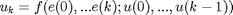
We will in general assume that the function f is linear and depends only on a finite number of signals, e(k) and u(k). Therefore, the basic structure of the difference equation can be written as follows.
(2)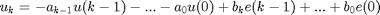
For example, the following difference equation calculates the output u(k) based on the current input e(k) and the input and output from the last time step, e(k-1) and u(k-1).
(3)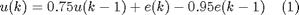
Finding transfer function using the z-transform
Recall that a transfer function for a continuous system as we have considered so far is derived by first taking the Laplace transform of a set of differential equations and then rearranging the results into the form Output/Input. To derive the transfer function in discrete form, a mathematical tool very similar to the Laplace transform called the z-transform will be used.
The z-transform is defined by
(4)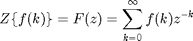
where f(k) is the amplitude of a sample, and the values k = 0, 1, 2, 3, ..., are the index corresponding to the discrete sample time.
The above leads to the following relation where z^-1 can be thought of as a delay operator.
(5)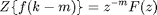
Employing these relations, we can easily find the discrete-time transfer function of a given difference equation.
Suppose we are going to find the transfer function of the system defined by the above difference equation (1). First, apply the above relations to each of u(k), e(k), u(k-1), and e(k-1) and you should arrive at the following.
(6)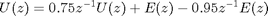
After few steps of algebra, you can rerrange this equation into the form Output\Input and you will have the following transfer function in discrete-time form as shown in equation (2).
(7)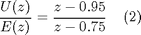
Derivation of state-space from difference equations
As you see in the continuous modeling tutorial page, another way to represent a system is to use the state-space form. The basic structure of the discrete state-space equations is the following.
(8)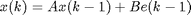
(9)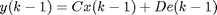
Matrices A, B, C and D are discrete versions of the state-space matrices employed for the continuous case. We can express our example system in state-space form as follows.
(10)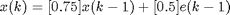
(11)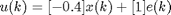
MATLAB representation
Now we will show you how to enter the equations derived above into MATLAB.
1. Transfer Function
Recall for continuous transfer function, the numerator and the denominator matrices are entered in descending powers of s. The same applies to discrete transfer functions. The numerator and the denominator matrices are entered in descending powers of z. For example, we can define the above transfer function from equation (2) as follows.
numDz = [1 -0.95]; denDz = [1 -0.75]; sys = tf(numDz, denDz, -1);
The -1 tells MATLAB that the sample time is undetermined. Alternatively, we can define transfer functions by defining the z variable as follows.
z = tf('z',-1);
sys = (z-0.95)/(z-0.75);
2. State-Space
For discrete state-space models, we can define the model in the same manner we did in the continous case. For example, the above discrete state-space model can be defined as follows.
A = .75; B = .5; C = -.4; D = 1; sys = ss(A,B,C,D,-1);
Again, -1 is used for an undetermined sample time.